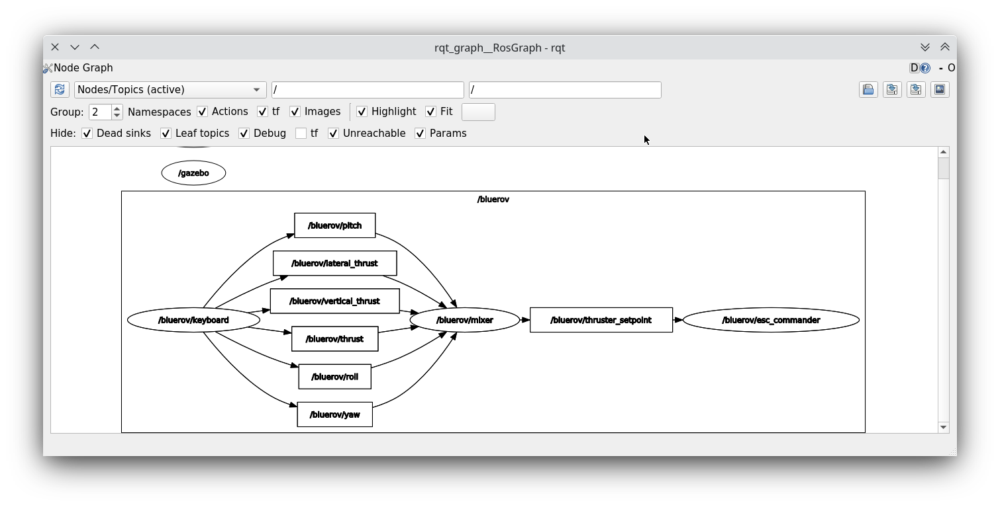
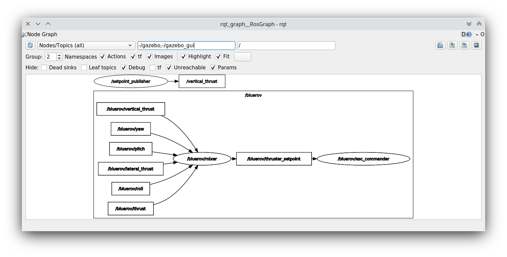

ROS Launch Setup
Attention
The following tutorial is not meant as a step-by-step solution for the first assignment. These are just toy examples to demonstrate how to use ROS and interact with the simulated BlueROV in an easy to follow manner. Therefore, we do not claim that these code snippets are complete and we use some funny names at times. Please do not copy-paste them.
Before We Start
So, before we start to create a super cool launch setup and have some super fancy nodes doing exciting stuff, lets take a step back and have another look on the keyboard-control setup from the setup instructions. Let us relaunch this setup and open just another terminal to run
rqt_graph
Make sure to select Nodes/Topics(all) in the upper left corner and refresh the view. This should yield a graph like
You can see the different nodes /bluerov/keyboard, /bluerov/mixer and /bluerov/esc_commander (we are not interested in the gazebo node and will simply ignore it) inside ellipses and topics inside rectangles. Since all these nodes live inside the /bluerov namespace and use relative topic names, everything has the /bluerov prefix (more on this later).
The esc_commander node is the interface between the ESCs which drive the thrusters and our ROS domain. It receives messages of the type fav_msgs/ThrusterSetpoint on the thruster_setpoint topic. That should be familiar to all of us from the previous tutorial and our dummy example with the setpoint_publisher.py. The message definition can be looked up in ~/fav/catkin_ws/src/fav/fav_msgs/msg/ThrusterSetpoint.msg and is:
std_msgs/Header header
float64[8] data
It contains the field data that is an double array of length 8. Each entry corresponds to a thruster.
Now let’s imagine the mixer node in the above graph would not exist and the keyboard node would have to publish messages of type fav_msgs/ThrusterSetpoint directly. This would imply that the keyboard node would have to know about the specific thruster configuration of our BlueROV to work. To move the vehicle forward when pressing W, the keyboard node would need to know that the first four motors are the only ones in horizontal direction and that they are configured in a way that all of them need to spin in positive direction to move the vehicle forward.
To add a layer of abstraction we have the mixer node. What keyboard actually wants to do is to say “the user pressed W, so move forward (i.e. set a positive value for thrust)” and from there on it is in the mixer’s responsibility to translate this to actual setpoints for the specific thrusters that participate in the forward movement of the vehicle.
Basically, we divided a bigger problem into two smaller problems. In this case this can be especially handy, because also a controller we might program at some later stage, does not need to have knowledge of specific thrusters/actuators. It can directly output commands corresponding to the actuated degrees of freedom of the BlueROV. And since all degrees of freedom of the vehicle are actuated, we can control all degrees of directly 🥳.
Mathematically the mixer node computes the following equation:
where \(t_0\) to \(t_7\) are the direct thruster setpoints.
Having Fun with Open-Loop Control
Let us start where we have left off in the previous ROS Package section.
We have a package called awesome_package. And we have a node called setpoint_publisher.py. Since we know about the mixer now, we want to use it and have to modify our setpoint_publisher.py to publish to the actuation topics instead of publishing directly to the thruster_setpoint topic.
1 #!/usr/bin/env python
2 import rospy # this is the python interface for ROS
3 import math # needed to use the trigonometric functions sin and cos
4 from std_msgs.msg import Float64
5
6
7 class MyFirstNode():
8 def __init__(self):
9 rospy.init_node("setpoint_publisher")
10 self.vertical_thrust_pub = rospy.Publisher("vertical_thrust",
11 Float64,
12 queue_size=1)
13
14 def run(self):
15 rate = rospy.Rate(30.0)
16
17 while not rospy.is_shutdown():
18 msg = Float64()
19 t = rospy.get_time()
20 msg.data = 0.5 * math.sin(t)
21 self.vertical_thrust_pub.publish(msg)
22 rate.sleep()
23
24
25 def main():
26 node = MyFirstNode()
27 node.run()
28
29
30 if __name__ == "__main__":
31 main()
We do not created a new package or a new node, so we do not have to rebuild the workspace to apply the changes. But make sure you have saved the file after making these changes!
Make sure no nodes/launch setups are currently running. Otherwise stop them with Ctrl + C in the corresponding terminals.
Start the simulation environment
roslaunch fav_sim simulation.launch
Lastly start our setpoint_publisher node:
rosrun awesome_package setpoint_publisher.py
And you see… nothing. This will probably not be the last time things do not work out as expected. So let us investigate what might be the problem. Remember rqt_graph? Great tool to see how nodes are connected (or not).
The command should yield something like this:
Make sure to uncheck Dead sinks and Leaf Topics. Since the gazebo and gazebo_gui node are not relevant for our example, we can hide them by inserting -/gazebo,-/gazebo_gui in the first text box. Also make sure Nodes/Topics (all) in the upper left corner and refresh the view.
Do you recognize how every node but our poor setpoint_publisher lives inside the /bluerov box? Now we will interact with namespaces for the first time. There are three distinct ways to declare topic names. They are either global, relative, or private.
In our node we declared the topic name to be relative. But how can we tell? Because there is no leading / or ~.
9 self.vertical_thrust_pub = rospy.Publisher("vertical_thrust", Float64, queue_size=1)
But what does it mean? It means the effective topic name will not necessarily be exactly vertical_thrust. This depends on the namespace of our node. Since we did not specify any namespace during rosrun awesome_package setpoint_publisher.py, the topic will be resolved as /vertical_thrust. The mixer node living inside the /bluerov namespace subscribes to the relative topic vertical_thrust. Due to the namespace this will resolve as /bluerov/vertical_thrust. That is the reason why our node is not connected to the mixer.
How to fix it, you may ask? We simply push our node into the /bluerov namespace. This makes sense because our node is part of our BlueROV setup. Another ‘fix’ would be to prepend bluerov/ to the topic name of our publisher. But in this specific scenario I would rather call it botch. So let us push this node to the right namespace already! Just append __ns:=bluerov to the rosrun command.
rosrun awesome_package setpoint_publisher __ns:=bluerov
This tells our node to live inside the bluerov namespace.
Refresh our view of rqt_graph by clicking the refresh button in the upper left corner and you will see, we have a beautifully connected graph!
We can now admire our moving robot in the simulation:

By now we might get worried by the increasing number of needed terminal windows. Imagine we want to start additional nodes. Do we really need a separate terminal for each of them? Of course not! Launch files to the rescue!
Create A Launch Setup
Create a new launchfile. You could name it setpoint.launch for example:

It could look like this:
1 <launch>
2 <arg name="vehicle_name" default="bluerov" />
3
4 <!-- start the simulation -->
5 <include file="$(find fav_sim)/launch/simulation.launch" pass_all_args="true" />
6
7 <group ns="$(arg vehicle_name)">
8 <!-- start the setpoint publisher node -->
9 <node name="setpoint_publisher" pkg="awesome_package" type="setpoint_publisher.py" />
10 </group>
11
12 <node name="rqt_graph" pkg="rqt_graph" type="rqt_graph" />
13 </launch>
Explanation
Let’s take a detailed look what we have here.
Arguments
2 <arg name="vehicle_name" default="bluerov" />
Declares an argument named vehicle_name and assigns the default value "bluerov". We will use this argument to set the namespace of the nodes to be launched. To overwrite this argument without having to modify the launch file, we can simply append vehicle_name:="A_NEW_VALUE" to the roslaunch command.
Include Files
5 <include file="$(find fav_sim)/launch/simulation.launch" pass_all_args="true" />
We can include other launch files. It is literally the same as copy pasting the content of the specified file right inside our own launch file. Furthermore we have the special syntax $(find fav_sim) here. We do not have to know the full path to the launch file. We can use $(find)` to get the path to ros packages. In case the pass_all_args attribute is set to true, all arguments in our launch file get passed to the included launch file. Otherwise this would not be the case.
Groups and Nodes
7 <group ns="$(arg vehicle_name)">
8 <!-- launch the motor_command_sender node-->
9 <node name="setpoint_publisher" pkg="awesome_package" type="setpoint_publisher.py" />
10 </group>
Two things here. We can delcare groups and assign a namespace to everything that is inside this group by settings the ns attribute. To use the arguments we have declared in the launch file or pass in via the command line, we use $(arg parameter_name) so in our case $(arg vehicle_name). To start the setpoint_publisher node we use the <node> tag. The name attribute overwrites the node’s name set in the sourcode by rospy.init_node("setpoint_publisher"). pkg is the name of the package where the node is located. And type is the file name of the executable.
12 <node name="rqt_graph" pkg="rqt_graph" type="rqt_graph" />
This starts the rqt_graph tool directly in our launch setup. This way we do not have to start it in another terminal to see the nodegraph.
Launch the Setup
So this launch file produces the exact same setup we have created in the section Having Fun with Open-Loop Control before. The advantage is, we can start it with a single command:
roslaunch awesome_package setpoint.launch
Really looks the same, doesn’t it? Now stop everything and try to assign the vehicle_name parameter from the command line.
roslaunch awesome_package setpoint.launch vehicle_name:=roflcopter
Everything will still be connected just fine. The only difference is, that every node is running inside the /roflcopter namespace.
Taking the Next Step
We can also pass arguments to the launch file that are not declared in the file we are launching directly. Remember that we set pass_all_args to true when including simulation.launch? Inside simulation.launch the file spawn_vehicle.launch is included and all arguments are passed as well.
There are arguments x, y and z declared for the spawning position of the vehicle and R, P and Y for the orientation. We can pass arguments all the way down to this launch file. So we can modify the spawning position of the vehicle by running
roslaunch awesome_package setpoint.launch x:=4 z:=-3
Maybe it is necessary to rate the camera inside gazebo to find the BlueROV in its new position.
Get Sensor Data
At this point we know the basics of actuating the vehicle. But to know how we want to actuate the vehicle, we might depend on some sensor input.
The BlueROV has a pressure sensor. The output of the pressure sensor is published under the pressure topic inside the vehicle’s namespace. So by default the topic name will be /bluerov/pressure.
Theoretically we could use the setpoint_publisher.py and modify its code to subscribe to the pressure topic. But to keep things modular and separated, we add a new node to the awesome_package. Let’s name it depth_calculator.py. You could argue that having a complete program only calculating the depth coordinate of the vehicle from pressure data might seem like a bit overkill. But let’s see the depth_calculator as some specific case of a state estimation. And this can get complex very quickly. Therefore it is a good idea to solve separate problems in separate nodes.
Note
Keep in mind, you have to make every node executable! See Write A Node.
The source code might look like this:
1 #!/usr/bin/env python
2 import rospy
3 from sensor_msgs.msg import FluidPressure
4 from std_msgs.msg import Float32
5
6
7 def pressure_callback(pressure_msg, publisher):
8 pascal_per_meter = 1.0e4
9 # what kind of pressure data do we get? relative/absolute? What about
10 # atmospheric pressure?
11 depth = -pressure_msg.fluid_pressure / pascal_per_meter
12 depth_msg = Float32()
13 depth_msg.data = depth
14 publisher.publish(depth_msg)
15
16
17 def main():
18 rospy.init_node("depth_calculator")
19 depth_pub = rospy.Publisher("depth", Float32, queue_size=1)
20 pressure_sub = rospy.Subscriber("pressure", FluidPressure,
21 pressure_callback, depth_pub)
22 rospy.spin()
23
24
25 if __name__ == "__main__":
26 main()
Hint
Confused on how you should know what the structure of a FluidPressure message is and how to access its data? Simply search for “ros fluidpressure” and you will find the message definition. Message fields are accessed by a dot operator.
We can add this node to our launchfile by adding the following snippet inside the <group>` tag:
<node name="depth_calculator" pkg="awesome_package" type="depth_calculator.py" />
And launch the setup:
roslaunch awesome_package setpoint.launch
We can check that the nodes are properly connected in the graph:

Note
Refresh the node graph with the refresh button in the upper left corner to make sure the graph is up-to-date.
And to inspect the data, we can plot it in rqt_multiplot

or use the rqt topic monitor or simply in the command line:
rostopic echo bluerov/depth
We can see that the data is noisy. And in the real world data is always noisy. But depenending on the scenario there is a wide range of filtering methods available. One could compute a moving average over the last \(n\) data points, a very simple software first order lowpass filter or maybe even something more advanced like a Kalman filter. But the possibilites are ofcourse not limited to those approaches.
The Missing Link
So now we have a depth_calculator computing the depth of the BluerROV in some way and we have a setpoint_publisher publishing vertical thrust values to move the BlueROV. What about renaming the depth_calculator to depth_estimator and make the setpoint_publisher a depth_controller? Maybe a depth_controller should subscribe to a setpoint topic as well as to the current depth?